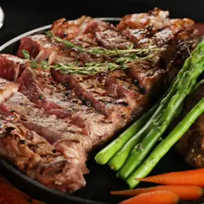
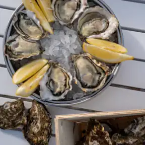
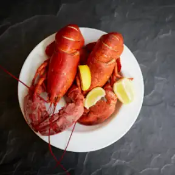
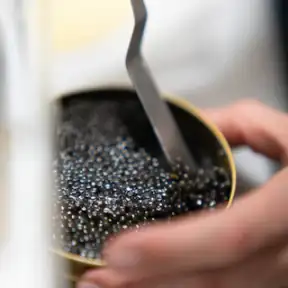
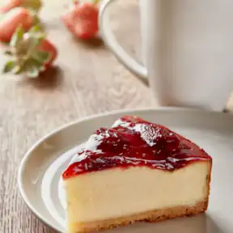
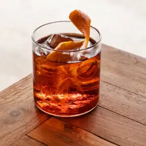
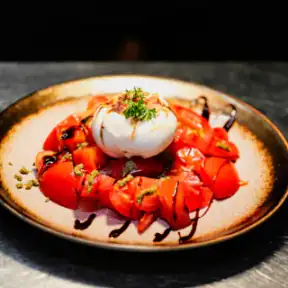

The look of a letterpressed menu card. Neutrals stay quiet so the food photos lead, and gold is kept for actions and highlights.
Primary actions use the gold gradient. Gold text uses the deeper shade so it passes WCAG AA on ivory.
Cormorant Garamond for dish names and headlines, Hanken Grotesk for everything you tap.
Spring-based micro-motion on add and stepper, loaded lazily and turned off for reduced-motion users.







Warm, low-light food photography, self-hosted as ~10 KB WebP thumbnails so the menu stays fast and works offline.